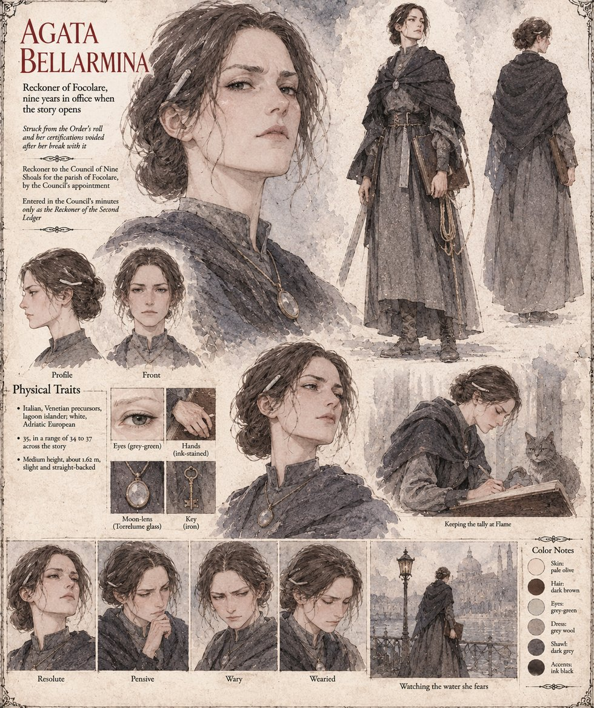
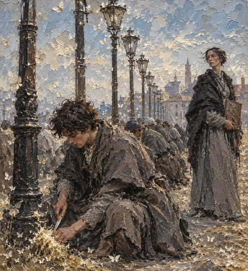

Agata Bellarmina
Reckoner of Focolare, nine years in office · keeper of the headcount · later Reckoner to the Council of Nine Shoals for the parish · 34 at the start, 81 at her death
Thirty-four when the manuscript opens, unmarried, the daughter of a glassmaker’s bookkeeper who died in the middle of a subtraction, and Reckoner of Focolare for nine years: she counts the oil, the wicks, the hours, the births and the dead carried out, and keeps a grey lamp-store cat, Stoppino, in the ledger under Miscellaneous. Afraid of deep water and never taught to swim, she computes that the island’s twelve hundred and four souls stand a hundred and fourteen over its Measure of one thousand and ninety, finds that the form did not provide for a surplus, and rules a column of her own with her father’s steel straight-edge, headed Excess. The Order answers in eleven days: Focolare will be translated to a valley on the river Talvena. She fills in the eleven-page inventory over four evenings, notes that the dead are Not Translatable by Doctrine, and counts forty-one boats from the third. On the last night of the river her brother Nico asks for the northernmost lamp, and she writes him down for Lamp Forty-One, in her neat, forward-leaning hand.
The Ring of one hundred and six lamps is closed on the third dusk, and she tallies Petitioners at Flame on chalked squares of lamp-glass: three hundred and ten to the lamp in the first week, eleven hundred in the first month. On the eve of her thirty-fifth birthday Nico gives her a moon-lens of Torrelume glass; that night he hands Ilario the Far Lamp, and the boy is taken by the flower. At the next Kindling the hollow screams for nine seconds, and she counts them. When Nico slips out saying I owe him a night, she counts to eleven, reaches the foot of Lamp Forty and stops, entirely unable to forgive herself and, by the Decree, correct. Gaudenzio rules that the Reclamation applies to her brother, and she prepares the forms. Inventorying his estate she lays out the jar of shells to the row of eighty-nine, breaks, and runs over the Line at noon until the sexton holds her at the fence. Ottone lets her mark the jar worthless — see margin, and in the margin she writes nothing.
The brown book, headed Things Counted, begins the day after the Inquest. From Lamp Thirty-Eight she counts the flower’s tiers (eighty-nine, fifty-five, thirty-four, twenty-one, thirteen), the last rows of the Tide Game. Through the first winter and spring the moth-tally climbs from eighteen hundred at the lamp to twenty-nine hundred while the shrimp tithe falls from a hundred and forty measures a week to twelve, and she writes the one hypothesis she reaches by reasoning and not by counting: that the lamps are souring the shallows. The Legate tells her I do not count what the Sun has already counted. She takes the jar from the Order’s drawer after the Great Lighting, is entered Indisposed when she stops assigning lamplighters, and at the fence a foreigner named Higaide asks Your name? and hands her a brined sloe. In Ferren she gives the Tribune Domenica Ardizzon the book and the jar: It began as my brother’s. The Pontiff’s secretary strikes her from the roll; the Council appoints her its Reckoner for Focolare. At the Concord she has her brother’s name restored first, and the parish stands at twelve hundred and twelve: It balanced. She had rather hoped it would not. She lives to eighty-one, writes Wrong beside her hypothesis, teaches the children the Tide Game, and learns to float at fifty-one. The Council’s minutes carry her only as the Reckoner of the Second Ledger.
The manuscript gives her ages (thirty-four that winter, thirty-five on her birthday in Iverin, fifty-one at the float, eighty-one at her death), her forward-leaning hand, the straight-edge, the chalk, the moon-lens on its cord and the iron key on its chain; it gives no height, build, face, hair or eye colour. The sheet’s slight, straight-backed build of about 1.62 m, grey-green eyes, dark brown hair with a chalk stub stuck in it, grey wool dress and dark grey shawl are its own, as are its panels Resolute, Pensive, Wary and Wearied and its scenes Keeping the tally at Flame and Watching the water she fears. Its age differs in form: it prints “35, in a range of 34 to 37 across the story”, a range the manuscript does not state. Its three italic title lines (struck from the roll and her certifications voided, Reckoner to the Council of Nine Shoals by its appointment, entered in the minutes as the Reckoner of the Second Ledger) follow the manuscript.
“It began as my brother’s.”
Appears In

Related Subjects


Related Records

On the nineteenth of Lorren, in the ledger-room above the lamp-store of Focolare, Agata, thirty-four, comes to enter the difference between Souls and Measure and finds that the form did not provide for a surplus. She rules a column herself with her father’s steel straight-edge, heads it Excess and writes beneath it a hundred and fourteen, while Stoppino, the grey lamp-store cat, lies across the open parish book.

On the first of Ferren, in a bright, windy forenoon, a hundred and six lamplighters, probationers and volunteers in grey kneel along the Ring with their knives drawn, and the shoots at the foot of every post came up in the hand like wet string. By the second bell Agata’s chalked squares at Lamp Seven record a pale green fuzz at the foot of the post, and by dusk it is up to the ankle. Cesco, seventeen, is one of eight weeders taken in the weeks that follow.

At the second hour of the dark on the evening of the Interdict of the Withdrawn Flame, with the Hearth-Lamp put out, the people of Focolare come out of the lanes with their small fires cupped in their hands and relight the Ring from a hundred kitchens. Agata walks the whole of the curve with the brown book shut under her arm and a one-eared dog at her heel, and does not write; Higaide and Ubaldo watch from the fence.